솔국지 현황 보고 — 2026-11-05
다른 모델 · 다른 작업자에게 넘기는 문서. 이 문서만으로 게임의 흐름과 현재 약점을 파악할 수 있게 썼다. 커밋 95d488d (main) · APK build/solgukji.apk (디버그 서명) · 스크린샷은 docs/report_1105/.
한 줄 요약 — 휴대폰 세로 화면용 삼국지 오토배틀러. 7일(월~일) × 하루 3페이즈 동안 장수 카드를 모으고 조합해 9칸 진형을 짠 뒤, 결정론적 실시간 엔진이 계산한 전투를 3D 로 관전한다. 플레이어의 선택은 덱 구성 · 조합 · 진형 · 아이템에 있고, 전투 중 개입은 기본으로 꺼져 있다(자동 관전).
1. 한 판의 흐름
월 오전→징집 · 선택권 · 배급→조합→편성→① 토벌(PvE)→② 대전(봇 PvP)→다음 페이즈…일요일 저녁 토너먼트 8강 · 4강 · 결승
- 페이즈: 하루 오전 · 오후 · 저녁, 7일이면 21페이즈. 페이즈마다 패를 받고(징집 · 선택권 · 배급) → 조합 → 편성 → 토벌 → 대전.
- 토벌: 정해진 적 편성(황건 · 장연 · 엄백호 …)과 싸운다. 지면 경고 1. 경고 4(
Run.STRIKE_MAX)가 쌓이면 3일차부터 멸망(탈락). - 대전: 토벌 뒤 열린다. 봇 세력과 싸워 PV(세력 점수)가 오르내린다. 봇은 날마다
28 + 일차×5.5PV 씩 자란다. - 토너먼트: 일요일 저녁, PV 순위로 시딩한 8강 단판. 지면 그대로 끝.
- 아이템 보급: 1 · 3 · 5일차 아침에 유니크(신화 재료) 셋 중 하나를 고른다. 화면 가운데 띠 알림이 뜨고 고르기 창이 바로 열린다. 일반 · 매직 · 레어는 페이즈마다 지급.
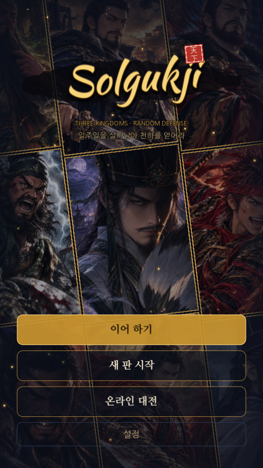
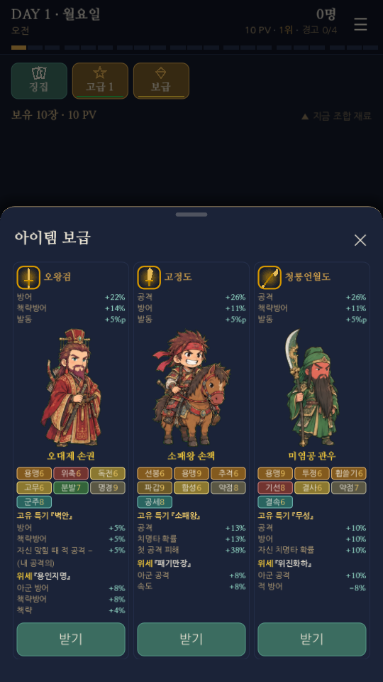
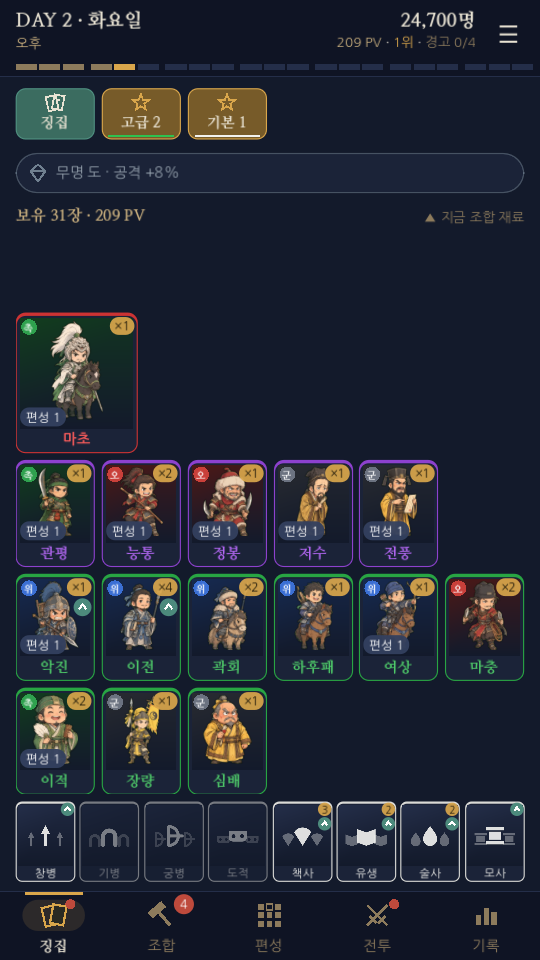
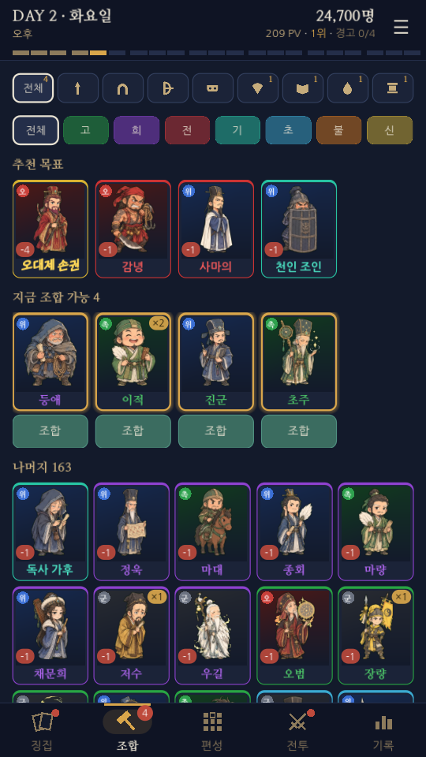
2. 카드 · 등급 · 조합
| 등급 | 이름 | 평균 병력 | 얻는 법 | 전투 특징 |
|---|---|---|---|---|
| 1 | 기본(병졸) | 100 | 징집 · 배급 | 장수 없음, 병종 그림 카드 |
| 3 | 고급 | 900 | 징집 · 선택권 · 조합 | 장수 인형 등장, 잔기술(자주 쓰는 기술)만 |
| 4 | 희귀 | 2,700 | 선택권 · 조합 | 고유 기술 1 |
| 5 | 전설 | 8,500 | 선택권(무상 천장) · 조합 | 고유 기술 1 |
| 6 | 초월 | 25,000 | 조합만 | 기술 2, 고유기 |
| 7 | 불멸(히든) | 47,000 | 조합만 | 기술 2, 고유기, 완성 연출 |
| 8 | 신화 | 70,000 | 조합 + 유니크 아이템, 한 판에 하나 | 기술 3, 고유기, 위세(진영 버프) |
| — | 기인 | — | 조합만 | 특수 위세(예: 처음 무너진 아군 2부대를 일으켜 세움) |
병종 8종: 창병 · 기병 · 궁병 · 도적(물리) / 책사 · 유생 · 술사 · 모사(책략). 같은 인물이 등급별로 여러 장(예: 손권 → 벽안 손권 → 오대계 손권)이고, 아래 등급 카드 몇 장 + 재료로 위 등급을 만든다. 특기는 인물별 사다리(data/passives.json)로 등급이 오르며 열린다.
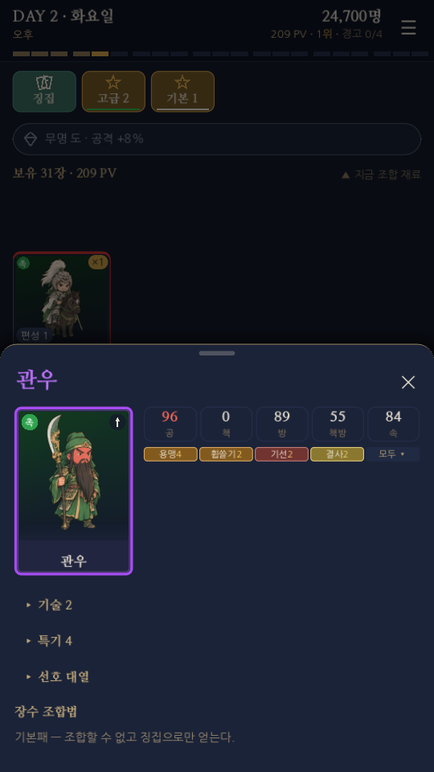
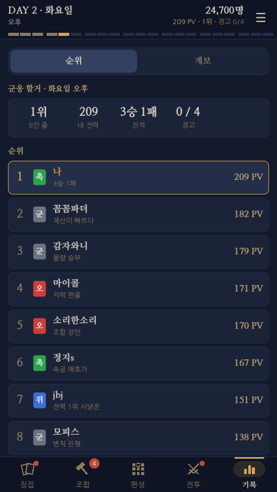
3. 편성 · 진형
- 9칸(좌 · 중앙 · 우 × 선봉 · 전군 · 중군 · 후군) 중 진형마다 쓰는 칸이 다르다. 진형 8종(봉시 · 어린 · 방원 · 학익 · 안행 · 언월 · 추행 · 장사).
- 진형 우대(
FORMBOON): 진형마다 두 병종이 능력치를 받는다. 예) 어린진 → 창병 · 유생 방어 +14%. 받는 장수 칸은 금빛 바탕 · 아래 띠로 표시. - 자리 선호 · 어색(
AFF): 병종마다 좋아하는 열이 있다(옥빛 테 = 선호, 붉은 테 = 어색). - 군단 효과: 장수의 단체 특기(같은 이름은 센 것 + 두 번째 절반) · 신화 위세 · 기인 효과. 전투 탭 위에 '장수 『특기』 효과' 형식으로 나열.
- 예전의 작전(균형 · 맹공 · 굳히기)과 군령 화면은 11/5 에 삭제. 엔진은 기본 작전 '균형'으로 군령을 그대로 쓴다(화면 표시만 없앰).
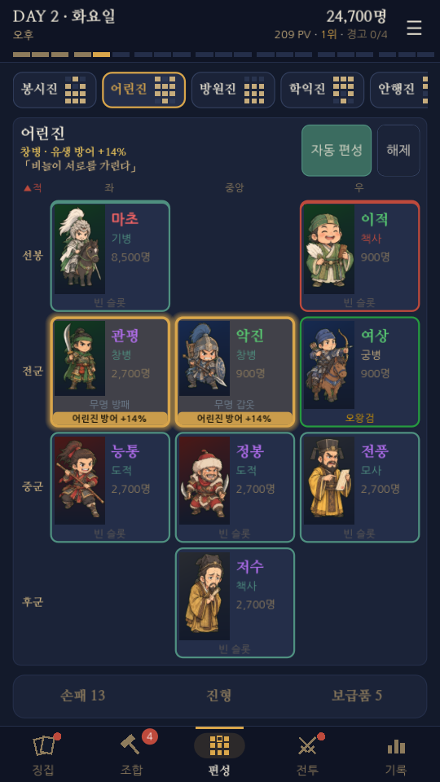
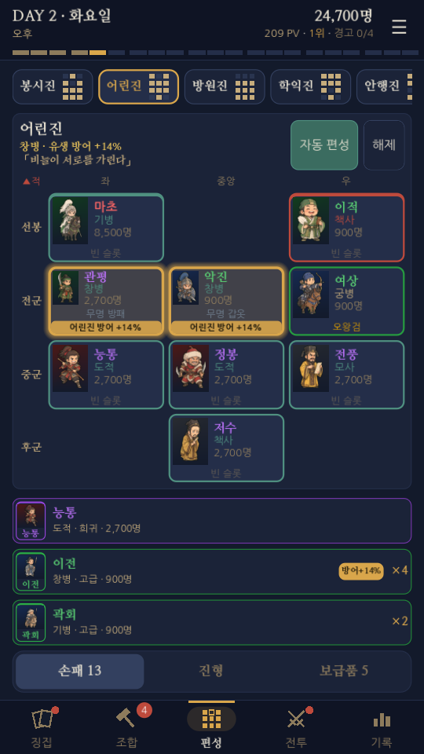
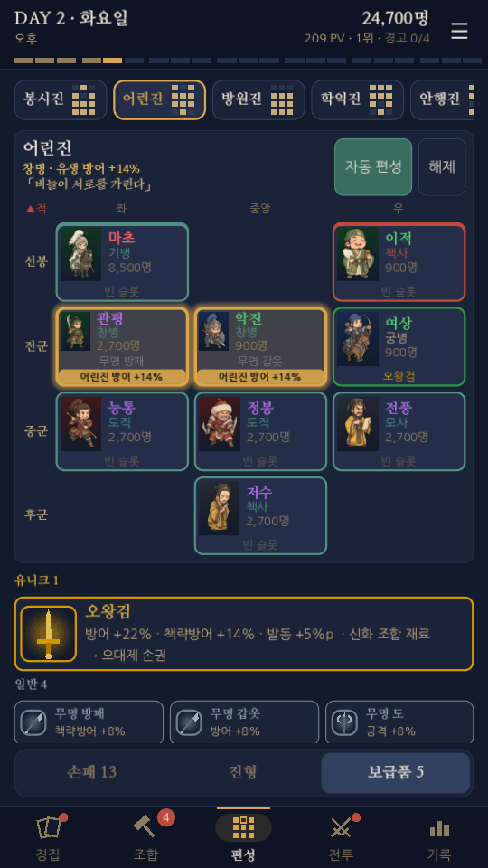
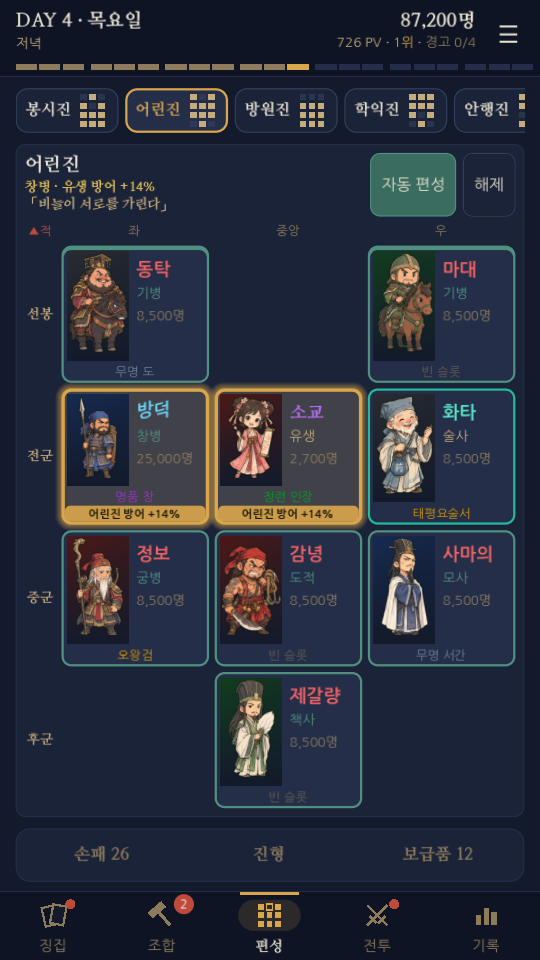
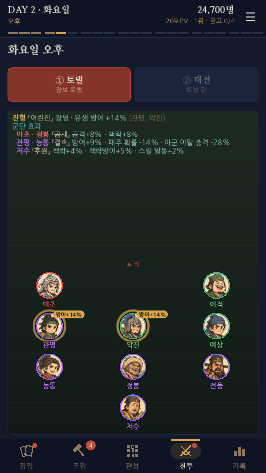
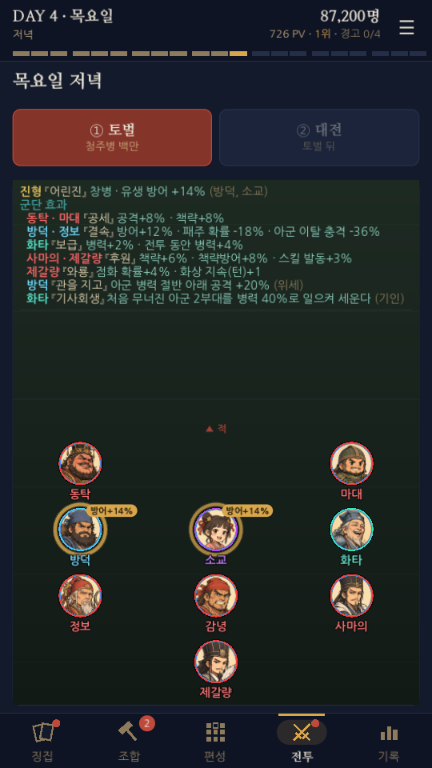
4. 전투
구조
- 엔진:
scripts/rt_battle.gd(실시간,battle.gd상속). 시드 + 덱 + 입력이 같으면 사건 기록이 완전히 같다(결정론). 온라인은 서버가 판정, 기기는 재생. - 화면:
battle_view.gd(흐름 · HUD · 연출) +war3d/war3d.gd(3D). 엔진 결과를 재생할 뿐 판정에 끼지 않는다. - 병사: GPU MultiMesh 로 한 판 최대 약 1,900명. 기병만 구운 말 모델(VAT), 나머지는 코드 도형 병사. 병사 수는 카드 PV 비례, 병력 12,000 아래 부대는 덜 그린다.
- 행동: 행동 준비(ATB)가 차면 평타. 일반 기술은 부대마다 충전 하나를 나눠 쓰고(등급별 RATE), 비용 · 조건이 맞으면 평타 대신 발동. 고유기(초월 이상)는 게이지 100 + 진영 간격.
- 자주 쓰는 기술(내부 이름 잔기술): 고급 이상 장수마다 하나, 평타 3~5번에 한 번 꼭 나간다. 장수 특기 축으로 고른다 — 화계(화상) · 독병 · 거짓 정보(혼란) · 저주 · 낙뢰 · 격려 · 방벽, 축이 없으면 병종 기본기(찌르기 · 창기 돌격 · 연사 · 암습/단도). 책략계 평타가 약해 무기력하던 것을 덜려고 넣었다.
- 배치: 양군 병력 합이 15만 아래면 진형 간격을 √비율로 좁혀 시작(최소 0.62배) — 작은 초반 전투가 빨리, 빽빽하게 맞붙는다.
- 카메라: 큰 군대는 '감독' 카메라(가장 뜨거운 부대 하나를 5초씩), 담을 병사 700 아래면 가장 큰 싸움 한 무리를 9초씩 천천히. 패주 부대는 따라가지 않는다.
장면
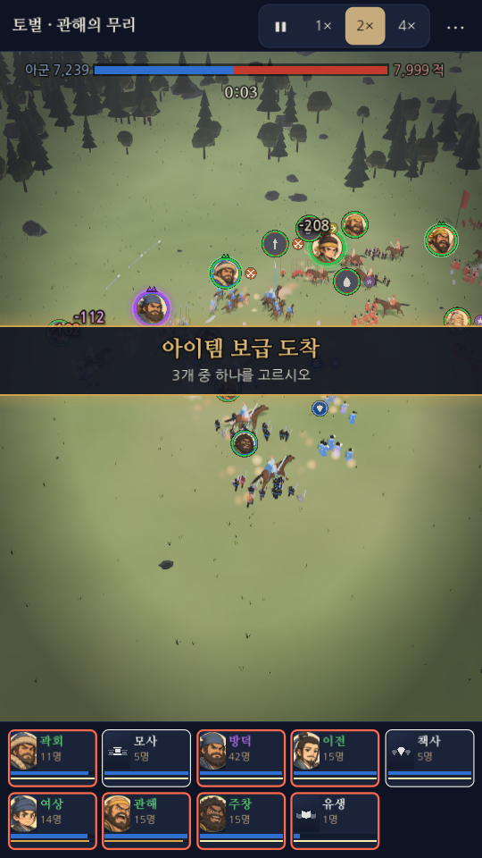
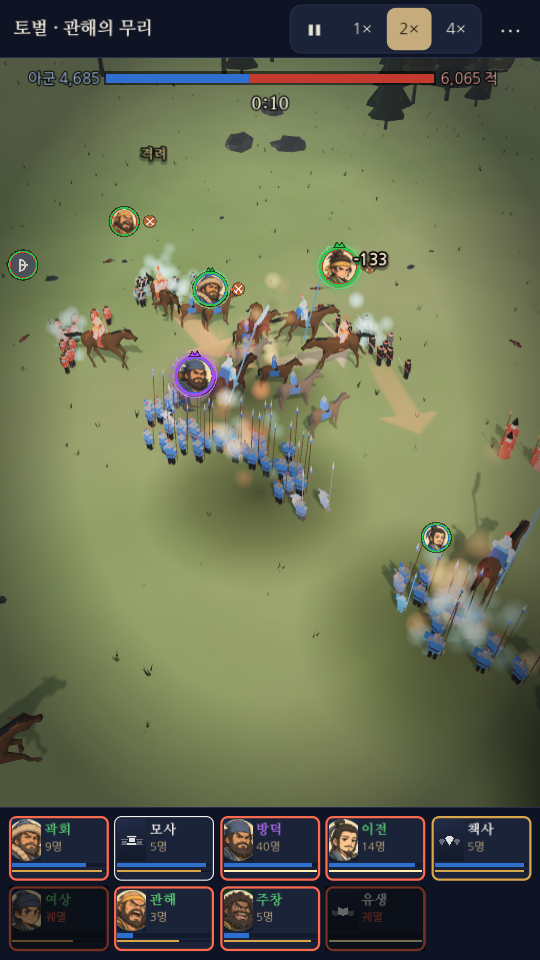
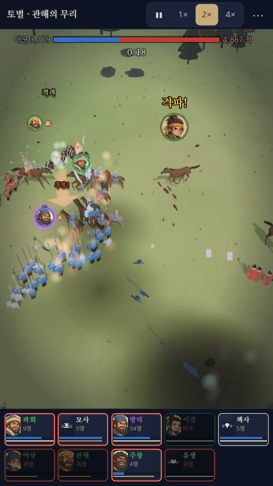
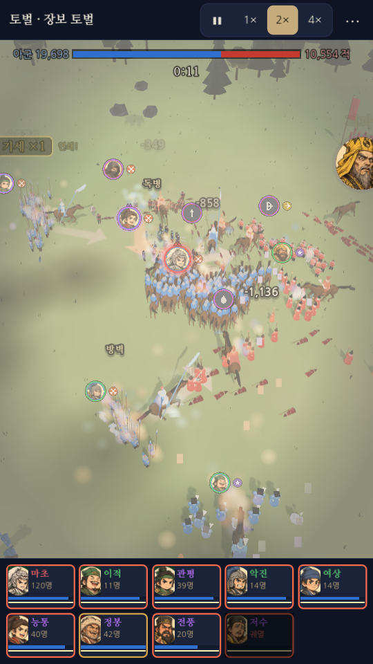
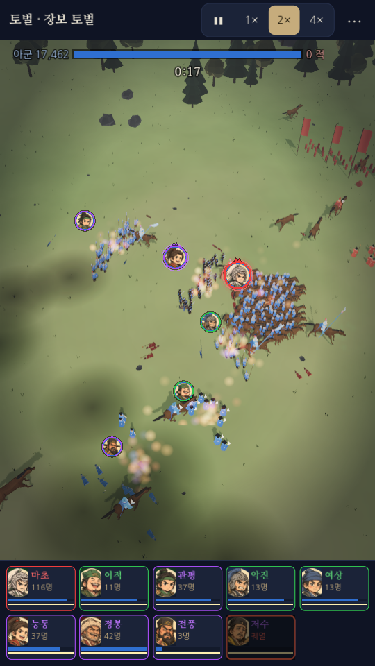
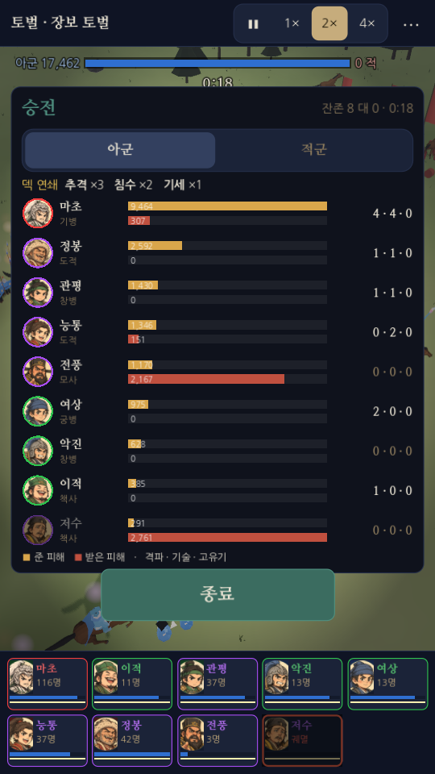
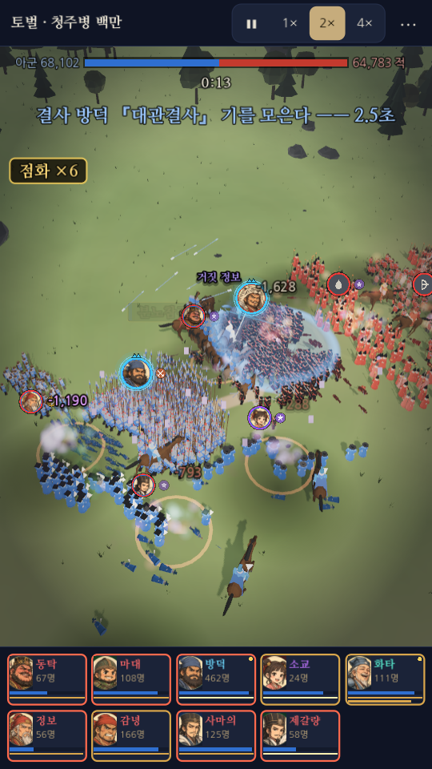
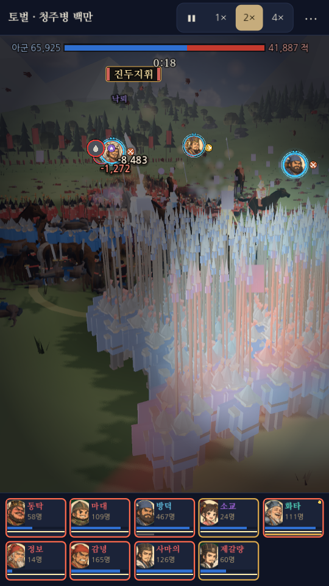
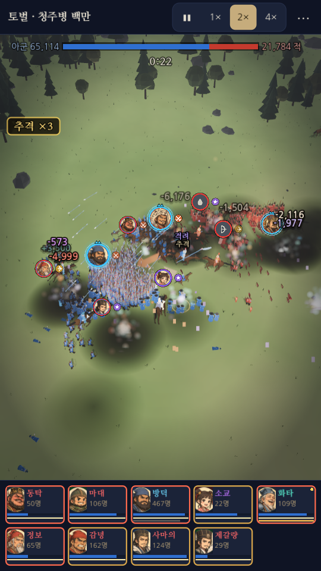
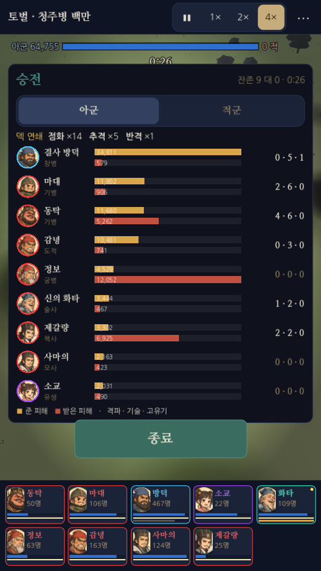
연출 (11/5 기준)
- 첫 격돌 「선봉 격돌!」 띠 · 짧은 멈춤 · 흔들림 · 함성/북. 일기토 문구는 효과가 없어 삭제.
- 자주 쓰는 기술마다 종류별 이펙트: 화계 → 불화살 + 땅에 4초 붙는 불, 낙뢰(제갈량 고유기 번개의 작은 판), 독병 초록 안개, 거짓 정보 보랏빛 소용돌이, 창기 돌격 충격파 · 휘청, 암습 검은 연기 · 검기. 화상 걸린 부대에는 따라다니는 불.
- 고유기: 법진 · 빛기둥 · 섬광은 술법 계열(낙뢰 · 독 · 환영 · 빛 · 회복 · 화공)만. 화공은 6초 불바다, 낙뢰 8연타, 그림자는 적마다 차례로 검기, 돌격은 흙먼지 길.
- 번쩍임 대책: 점광(OmniLight)은 고유기 첫 낙뢰 등 극소수만. 병사 윤곽빛(각도 의존 프레넬)은 고정 진영빛으로 교체.
- 톤: 채도 0.86 · 노출 0.9 · 빛 낮춤으로 차분하게, 대신 병사 옷감은 진영색(#2f6fd0 / #c43a2e) 그대로.
5. 지표
| 항목 | 값 | 측정 |
|---|---|---|
| 결정성 | 30판 실패 0 | tests/determinism.tscn |
| 자동 플레이 20판 | 우승 1 · 평균 도달 페이즈 13.3 / 21 (대부분 3~5일차 토벌 경고 4로 탈락) | tests/game.tscn |
| 일반 기술 발동(부대당 한 판) | 희귀 1.7 · 전설 2.1 · 초월 4.4 · 신화 4.3회 (11/5 조건 완화 · 한 부대 기술 비용 1.6→1.1 전: 1.4 · 1.5 · 4.0 · 4.3) | 등급별 10판 임시 측정 |
| 자주 쓰는 기술 | 고급 약 2 · 희귀 5 · 초월 11회 (병종판 측정, 장수판은 비슷) | 임시 측정 |
| 판 길이 | 등급 3~5 약 28~36초, 6~8 약 44~59초 | 임시 측정 |
| fps (PC) | 병사 1,166명 평균 219, 1,910명 122~128 | --gfps=8 |
6. 약점 · 함께 고민할 것
높음난이도 곡선 / 탈락률 — 자동 플레이 20판 중 우승 1~2. 대부분 3~5일차에 토벌 경고 4로 멸망한다. 자동 플레이 AI 가 서툰 탓도 있지만, 사람도 같은 벽을 만날 가능성이 크다. 토벌 적 사기 곡선(
QUEST_MORALE), 경고 규칙, 경제(DB.ECON)를 같이 봐야 한다. 사용자는 "밸런스는 나중에"라고 해서 보류 중.높음관전형 전투의 몰입 — 전투 중 개입이 없어서 볼거리가 곧 재미다. 초반(고급 · 희귀)은 기술이 한 판 1~2번뿐이라 평타 숫자만 오가기 쉽다. 자주 쓰는 기술 · 첫 격돌 · 땅 불 · 촘촘한 진형으로 보강했지만, 실제 손맛은 휴대폰에서 확인이 필요하다.
중간책략계 존재감 — 책략 평타가 약하고, 신화 조조 같은 책략 장수가 무기력하게 물러나는 판이 있었다. 자주 쓰는 기술(화계 · 독병 · 거짓 정보 · 낙뢰)로 보완했지만 수치 검증은 아직이다.
중간속도 능력치가 보이지 않는다 — 속도는 개전 순서, 공격 간격(최대 약 25%), 이동 증감에만 쓰여서 체감이 약하다. 수몰(이감)의 속도 감소도 화면에서 느끼기 어렵다. 삭제할지 키울지 결정 대기.
중간고유기 어깨 카메라 파고듦 — 스크린샷 13_b_late_1 처럼 장수 뒤 낮은 카메라가 빽빽한 병사 사이로 들어가 큰 창병이 화면을 덮는다. 카메라 거리 · 높이를 병사 밀도에 맞춰야 한다(
War3D.cinematic shoulder).중간번쩍임 재발 위험 — 발광 재질 · 점광 · 각도 의존 빛을 넣을 때마다 '번쩍번쩍' 지적이 나왔다. 새 이펙트는 무광 · 점광 없이 만드는 것이 원칙.
낮음휴대폰 성능 미검증 — GPU 병사 · 땅 불(입자 반복) · 고유기 이펙트는 PC 에서만 쟀다. 저사양 기기에서 프레임 확인 필요.
낮음온라인 메시지 크기 — 전투 기록이 53~112KB. 사건마다 전 부대 상태 스냅숏이 붙는다. 자주 쓰는 기술은 사건을 늘리지 않도록 타격 사건에 이름만 붙였다.
낮음온보딩 없음 — 첫 판에 징집 · 선택권 · 조합 · 편성 · 진형 우대를 한꺼번에 만난다. 안내가 없다.
낮음그림 공백 — 신화 아래 등급용 장면 일러스트(
<인물>_장면.png)는 경로 · 프롬프트(prompts/등급별/5_장면, 29명)만 있고 그림은 아직 없다. 지금은 신화 그림을 그대로 쓴다. APK 는 디버그 서명뿐(배포용 키 없음).7. 오늘(11/5) 바뀐 것
- 피아식별: 진영색 파랑 · 빨강, 옷감 진영색, 병종 색조 돌리기 끔 / 화면 톤 차분하게.
- 가운데 띠 알림, 아이템 보급 자동 열기, 선택권 고른 연출(카드 튀어오름 + 띠).
- 편성: 작전(군령) 삭제, 아래 탭 맨 아래 고정, 손패 목록, 보급품 등급별, 칸 확대, 진형 우대 표시, 머리 3줄. 전투 탭: 진형 · 군단 효과 목록, 메달 → 장수 상세.
- 전투: 자주 쓰는 기술(장수 특징), 일반 기술 조건 완화 · 한 부대 기술 비용 인하, 땅 불, 고유기 차별화, 첫 격돌, 본진 깃발, 기병 외 도형 병사, 작은 군대 카메라 · 촘촘한 진형.
- 세부 기록: 저장소 맨 위
작업현황.md⑭~㉛.
8. 다음 작업자를 위한 지도
| 파일 | 내용 |
|---|---|
scripts/game/run.gd | 한 판 상태 · 페이즈 · 경제 · 토벌/대전/토너먼트 · 봇 성장 |
scripts/battle.gd · rt_battle.gd | 전투 판정(결정론). MINOR/minor_kind 자주 쓰는 기술, lay 촘촘한 진형 |
scripts/db.gd | 카드 · 기술 생성(_reskill, strict_cond, SK_COST), 그림 경로 |
scripts/battle_view.gd | 전투 화면 흐름 · HUD · 소리 · 첫 격돌 |
scripts/war3d/war3d.gd · ult_fx.gd | 3D 전장 · 카메라 · 병사 · 이펙트(minor_fx, fire_patch) · 고유기 연출 |
scripts/ui/*.gd | 화면(징집 · 조합 · 편성 deploy_page · 전투 탭 formation_view · 카드 상세 game_screen) |
data/*.json | 카드 · 진형 · 기술 풀 · 특기 사다리 · 고유기 |
점검 방법 (
결정성
스크린샷
fps
solgukji_godot 에서, Godot 4.4.1 콘솔판)결정성
--headless --path . res://tests/determinism.tscn · 자동 플레이 res://tests/game.tscn스크린샷
--path . --resolution 540x960 -- --gnew=시드 --gplay=페이즈수 --gpage=draw|forge|deploy|war|rank --gseg=hand|item --gbattle=quest|pvp --gsheet=card:c39 --gshot=파일.png --after=초 --frames=N --every=초fps
--gfps=초 · APK --headless --export-debug "Android" ../build/solgukji.apk